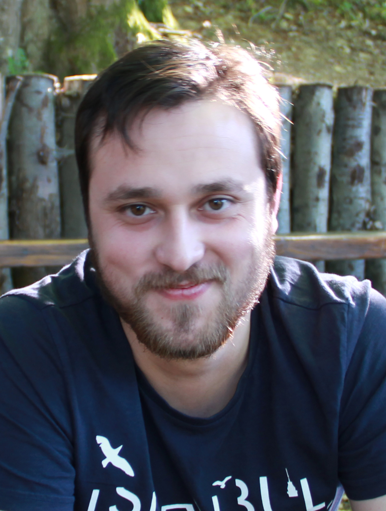
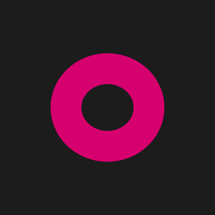

İbrahim
From idea to startup — designing the systems that make it work.
Co-founder of Phexum & JoedTech. Focused on SaaS architecture, multi-tenant systems, domain-driven design.
Technical Philosophy
I specialize in building robust backend systems using Java, NestJS, TypeORM, and PostgreSQL, with a strong focus on Domain-Driven Design (DDD).
For me, software is not just about writing code. It's about structuring complexity. I believe systems should reflect the business domain clearly, allowing them to scale without becoming fragile.
My approach prioritizes clarity, maintainability, and long-term evolution over quick solutions. I aim to build systems that are not only functional, but structurally sound and predictable.
Companies & Works
Phexum
Core FocusStartup Initializer. We design and build the entire technical foundation of startups, covering backend systems, mobile applications, AI integration, and data analytics. Everything delivered ready to scale.
Phexum focuses on transforming early-stage ideas into fully functional, production-grade systems, allowing founders to focus on growth instead of infrastructure.
JoedTech
ProductA multi-tenant SaaS platform built for the education industry, combining CRM, LMS, and event management (JAM) into a unified, scalable system with brand-level customization for each organization.
Currently live and in production, serving multiple organizations with a modular architecture designed for long-term growth.
Pulse
ProductA Phexum product. AI-powered customer intelligence platform that monitors all written communication channels to detect early signs of churn. Pulse analyzes customer loyalty, uncovers root causes of dissatisfaction, and surfaces actionable KPIs. Includes a built-in survey module for collecting direct customer feedback.
Pulse also prioritizes which customers need immediate attention, enabling support teams to focus where it matters most. With integrated project management, every insight turns into a trackable action.
Think of it as measuring your customers' pulse. Catching the warning signs before a heart attack, so your team can act while there's still time.
VBT
MilestoneReceived strategic investment from VBT, marking an important milestone in our journey of building scalable and production-ready systems. This milestone reflects both the technical strength of our work and the long-term vision behind the platforms we are developing.

Orbi
Orbi is a work platform where AI agents sit on a team's board next to its human members. It was born as Phexum's own product, and part of Phexum's daily operation now runs on it.
A card can be assigned to an agent the same way it is assigned to a person. The agent takes the work, ticks off the steps on the checklist, asks a question in a comment when it gets stuck, and delivers its output under the card. The rest of the team follows along on the same board.
Orbi is not tied to a single model vendor. Gemini, Anthropic, OpenAI and OpenRouter models run on the same surface, and a team can bring its own API key. Orbi connects to other systems through MCP servers, and it can also be used from other AI tools as an MCP server itself. It can run in the cloud or be installed on your own infrastructure.
Read the case study or visit orbiwork.space to see it in action.
Jögo
FriendBorn from a broken Cat5 cable that refused to be thrown away. A childhood experiment turned quiet companion.
Waiting to be the mascot of whatever gets built next.
Tech Stack
Get in touch.
Open to partnerships, consulting, training, and building products from zero to launch.